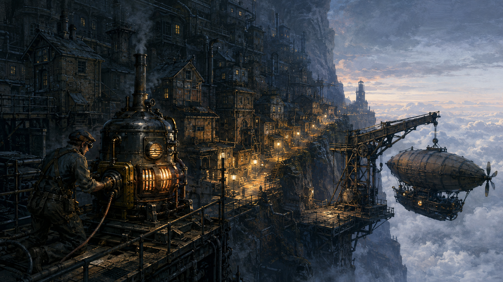
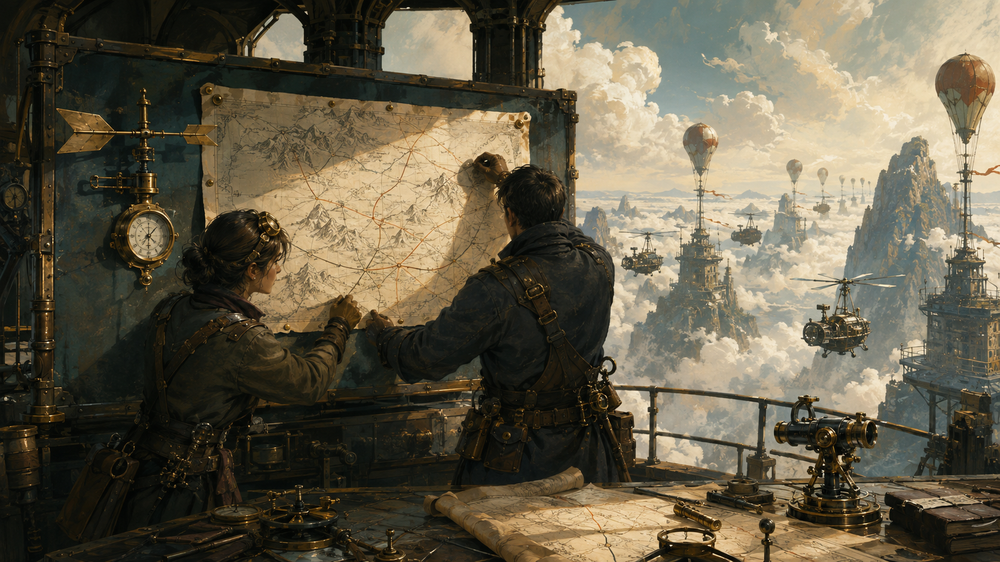
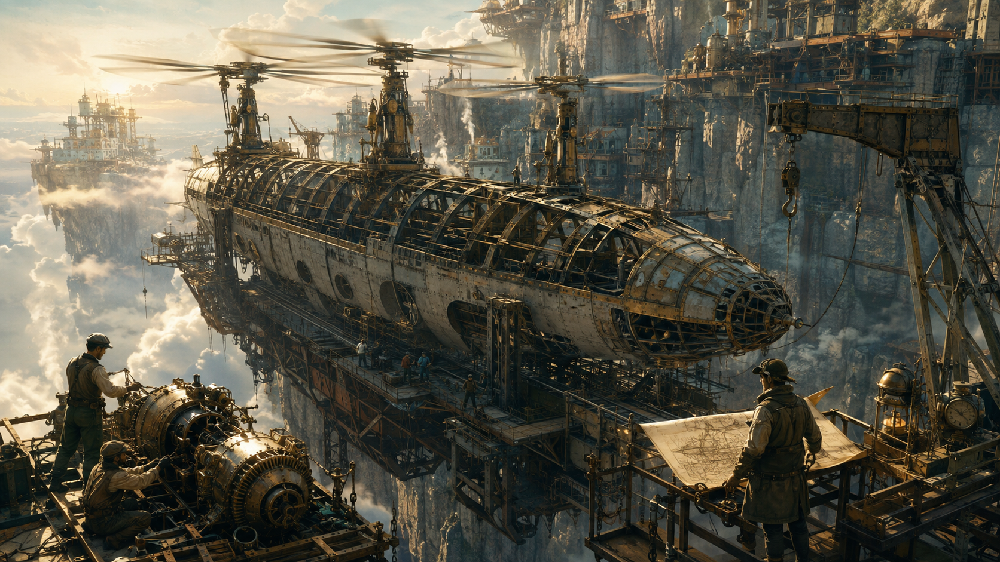
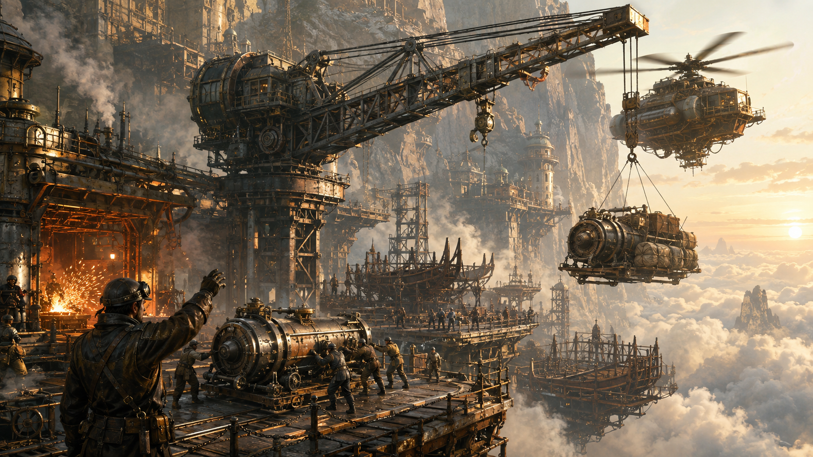
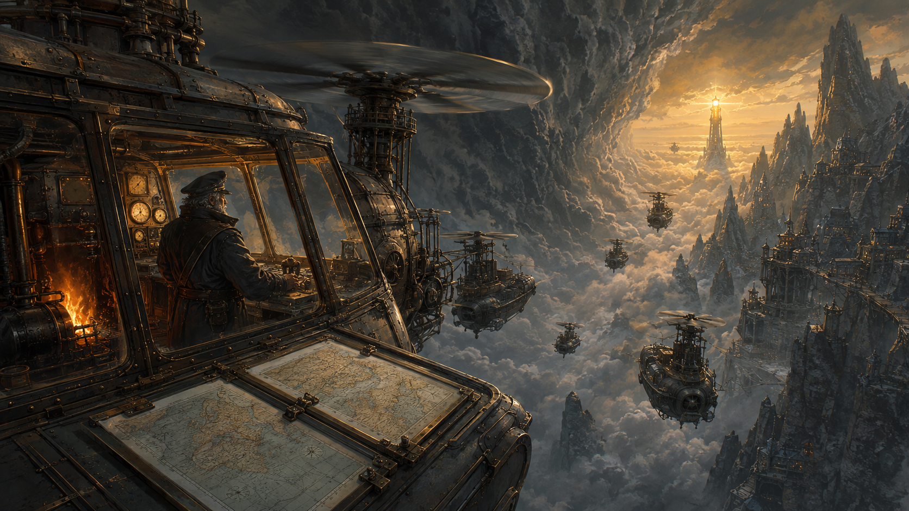
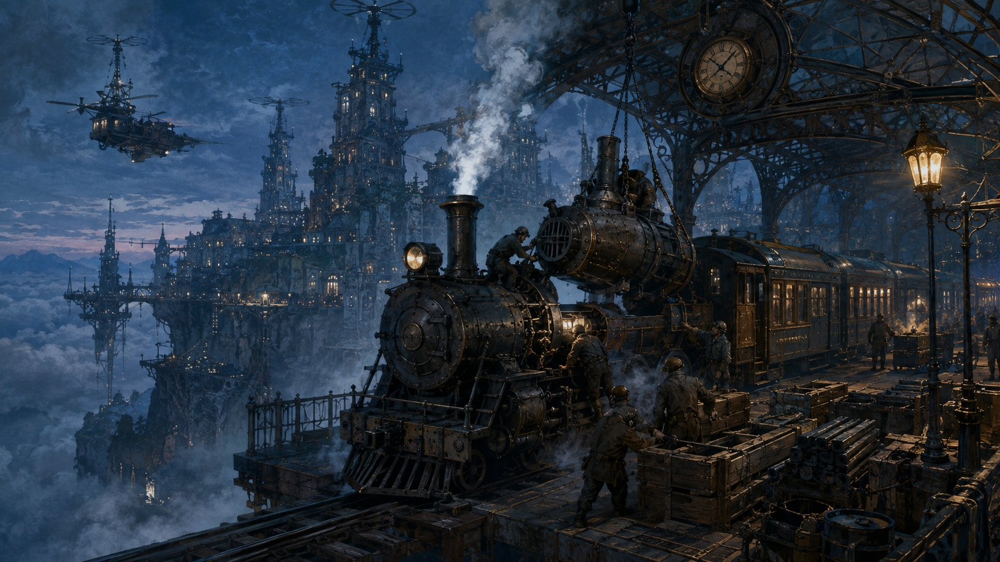
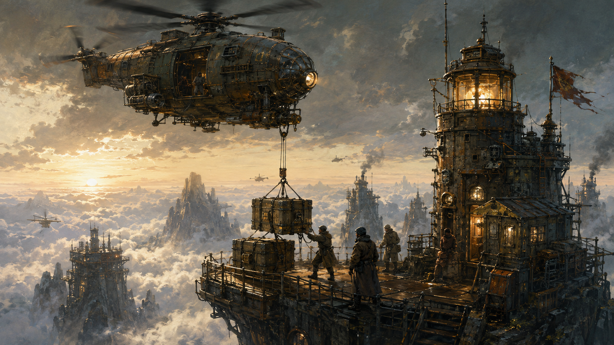
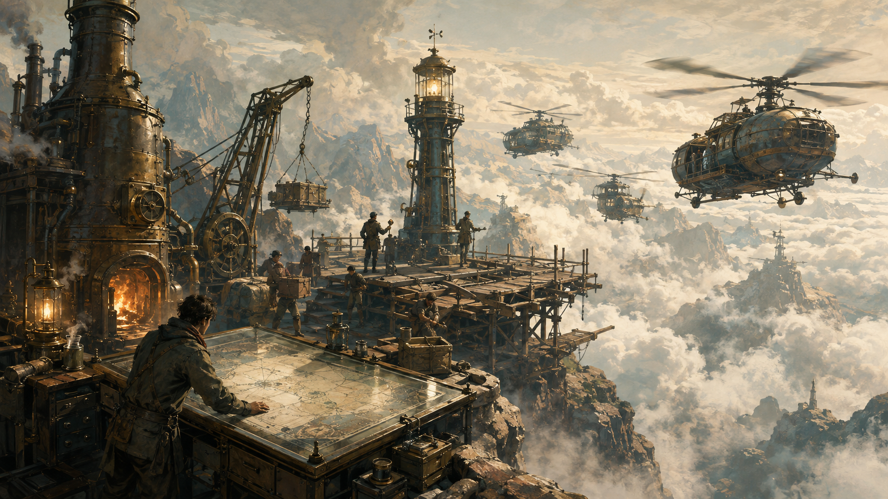

炮击
取本区 2 张公共货物
只剩 1 张就取 1 张；已经空了就不取。不能改去其他空域补足。
克制 钩索 · 被 俯冲 克制

THE DAWN RAID
失踪三十年的空中宝船，
今夜从风暴裂口漂了出来。
天亮之前，把你的未来抢下来。
Your mission / 游戏概览
每轮只选一个空域、一张指令。你能否得手，取决于谁与你相遇，以及他们打出了什么。
动力口有炉机，领航台有航图，货运架有物资。所有人同时决定去哪里。
炮击克钩索，钩索克俯冲，俯冲克炮击。每区至多一名胜者。
从宝船上吊货，或用钩索夺走符合条件的对手已有货物。
从第二轮起，每人只有另外两张牌可选。对手的整备牌是公开信息。
每张货物 1 分，完整委托额外 3 分。
最高分获胜，同分并列。
每人独立争胜，没有阵营，也没有玩家淘汰。人数决定轮数：4 人玩 4 轮，8 人玩 8 轮。
The lost flagship / 不落号
不落号曾把云层之上的山城与高塔连在一起。它失踪后，安全的航线逐渐断绝，崖边空坞也渐渐熄火。今夜，它再次悬停在风暴缺口：升力机还在轰鸣，船上仍有炉机、风层航图与工业物资。
你们各驾一艘小型蒸汽飞艇，从巨舰外侧接近、交锋、吊货，再拉开距离。已经拿到的货物挂在自己的吊架上，仍可能被钩走。天亮时风暴合拢，所有人都必须离开。

Ready the table / 出航准备
先确定人数 N。每人拿自己的三张指令，各空域放 N 张对应货物。
指令牌
每人炮击、钩索、俯冲各 1 张
货物牌
炉机、航图、物资各 4 张
不同的秘密委托
洗匀后每人秘密发 1 张
领航标记
另摆 1 张空域方位图
Table layout / 摆放示意
 ① 动力口炉机 × 4
① 动力口炉机 × 4 ② 领航台航图 × 4
② 领航台航图 × 4 ③ 货运架物资 × 4
③ 货运架物资 × 4三堆都正面朝上，放在空域方位图对应位置。编号也对应选区时的手势。
首轮三张都可选。密选时，将选中的一张扣在桌上。
自己查看，终局再揭示。其余玩家不知道你的清单。
开局两处都为空。之后把休息的指令与战利品分开放。
领航标记放在本轮领航者面前。上述框线仅用于说明摆放，不需要额外制作玩家板。
依次为 1—N 号，拿对应座号的三张指令。面向桌心时，顺时针下一位就是左手边玩家。
每个空域放 N 张相应货物。未使用的多余指令与货物收回盒中。
每人 1 张，看过后扣在自己面前；未发出的委托移出本局。
把标记交给选定的起始船长，记下他的座号。每轮向左传一次；传回起点，游戏结束。
Three orders / 指令与整备
先决出所在空域的唯一胜者，只有胜者能执行指令。独自抵达时直接胜出。
取本区 2 张公共货物
只剩 1 张就取 1 张；已经空了就不取。不能改去其他空域补足。

取本区 1 张，或夺宝
夺宝时，改取同区一名本轮打出俯冲的对手已有的 1 张货物。两种收益只能选一种。

取任一区 1 张公共货物
可选本区，也可选其他还有库存的空域。只拿公共货物，不能取玩家的货物。
本轮所用指令在本轮结束时进入整备，正面朝上留在面前。下一轮密选时它仍不可用；到下一轮结束，才将它收回手中，换成本轮新用的牌。
Round 01
可选：炮击 / 钩索 / 俯冲
轮末：炮击留在桌上整备。
Round 02
可选：钩索 / 俯冲
轮末：收回炮击，留下钩索。
Round 03
可选：炮击 / 俯冲
轮末：收回钩索，留下俯冲。
以上只是一种出牌示例，不是强制顺序。无论胜出、失利、三方牵制还是空仓，本轮用过的牌都照常整备。
One round / 回合流程
每轮所有人都参与。领航者负责倒数、带着大家结算，再传出标记。
看看各区剩余货物、每人已有货物，以及他们的整备牌。可以公开谈判、承诺让路，也可以虚张声势；不能展示秘密委托，也不能私下转交货物。
从可用手牌中选一张，背面朝上扣住。另一只手藏在桌下，用 1、2、3 根手指表示空域。所有人准备好后，领航者倒数“三、二、一”，一起翻牌、亮手势。
亮出后，指令和去向锁定。可把本轮指令放在对应空域旁，用牌上座号识别玩家；上轮整备牌仍留在个人面前。
每区先按交锋规则决定胜者，再执行该胜者的指令。空域无人就跳过；三种指令齐全则无人得手。货物取得后立即公开放到玩家面前。
取货看轮到该区时的实际库存。前一区的俯冲可能先取走后一区的货物。
收回上轮的整备牌，将本轮用过的牌留作新整备牌。领航标记传给左手边玩家。若尚未回到首位领航者，继续下一轮；若已回到他手中，立即进入终局计分。
首轮没有旧整备牌可收。最后一轮三个空域全部结算完，再传标记、结束游戏。
Resolve the clash / 交锋裁决
只比较同一空域里的指令。人数多，不代表火力更强；每区最多一人拿到收益。
A / 只有一人
不必比较克制，执行自己的指令。空仓不会取消胜者身份，但可能让你无货可拿。
B / 多人，全是同一种指令
本轮顺位最靠前的参与者胜出。其他同类玩家没有收益。
C / 恰好两种指令
被克制的指令全部失利；克制方若有多人，由其中顺位最靠前的一人胜出。
D / 三种指令齐全
不管各类有几人，都不取货、不夺宝。领航标记不能打破牵制。
例如 4 人局，3 号持领航标记，顺位就是：
沿顺时针逐人检查，只在本区符合胜出条件的人中选最先遇到的那位。3 号不在本区也照此数；1 号与 4 号同出钩索时，4 号先。
这里展示的船都在同一空域。切换场景，观察谁能执行指令。
Captain’s log / 连续实战
下面连续走完四人局的前两轮。每张货物、每张整备牌，都能找到来处。
| 船长 | 所选空域 | 指令 | 本轮结果 |
|---|---|---|---|
| 1 号 · 你 | ① 动力口 | 炮击 | 与阿珂同类，你顺位在先，取 2 炉机 |
| 2 号 · 老周 | ② 领航台 | 俯冲 | 独自胜出，选择取公共区 1 航图 |
| 3 号 · 小许 | ③ 货运架 | 钩索 | 独自胜出，取本区 1 物资 |
| 4 号 · 阿珂 | ① 动力口 | 炮击 | 同类比顺位未胜出，不取货 |
依次完成三个空域的取货后，公共库存为 2 炉机 / 3 航图 / 3 物资。四人把刚用的牌留下整备，领航标记从你传给老周。
小许上轮用了钩索，这轮只能选炮击或俯冲。他已有 1 张物资，正是你需要的。你猜他会俯冲，于是用钩索去动力口堵他。
| 船长 | 已有货物 | 整备中 本轮不能出 | 本轮亮出 |
|---|---|---|---|
| 1 号 · 你 | 炉机 × 2 | 炮击 | ① 动力口 · 钩索 |
| 2 号 · 老周 | 航图 × 1 | 俯冲 | ② 领航台 · 炮击 |
| 3 号 · 小许 | 物资 × 1 | 钩索 | ① 动力口 · 俯冲 |
| 4 号 · 阿珂 | 无 | 炮击 | ③ 货运架 · 钩索 |
你取走小许已有的 1 张物资。你的货物变成 2 炉机＋1 物资，小许变为零。因为选择了夺宝，你不再取公共货物；动力口仍有 2 炉机。
老周从公共区取 2 航图，加上原有 1 张，共持有 3 航图。领航台剩 1 航图。
阿珂拿到 1 物资，公共货运架剩 2 物资。她不能跨区夺宝，也不能抢另一位出钩索的玩家。
第二轮结束：公共区剩 2 炉机 / 1 航图 / 2 物资。你有 2 炉机＋1 物资；老周有 3 航图；小许无货；阿珂有 1 物资。
收回各自的旧整备牌，留下本轮指令。第三轮整备牌依次是：你的钩索、老周的炮击、小许的俯冲、阿珂的钩索。领航标记传给 3 号小许。
你的委托现在已经凑齐，但还没获奖。四人局还剩两轮；只有终局仍持有 2 炉机和 1 物资，才得到额外 3 分。这也让下一次俯冲更值得斟酌。
At first light / 终局计分
领航标记传完一圈、回到首位领航者时结束。所有人揭开委托，按此刻持有的货物计分。
三种货物每张都是 1 分，不在委托清单中的也计分。委托所需数量必须全部达到，少一张也没有委托加分；超出需求不会追加委托奖励。
用于满足委托的货物仍按每张 1 分计入。中途集齐又被抢走，不算终局完成。最高分获胜；同分玩家并列获胜。
| 终局持有 | 货物分 | 委托分 | 总分 |
|---|---|---|---|
| 2 炉机＋1 物资 | 3 | 3 | 6 |
| 2 炉机＋1 航图 | 3 | 0（缺物资） | 3 |
| 2 炉机＋1 航图＋1 物资 | 4 | 3 | 7 |
| 4 炉机＋2 物资 | 6 | 3（只奖一次） | 9 |
货物 4 分 ＋ 委托 3 分
需要 2 炉机＋1 物资，已完整满足。
输入终局实际持有的数量。每种货物全局最多 8 张；本工具只计算个人分数。
Rulings / 常见疑问
先找空域、指令或时机，再看对应裁定。
没有匹配的条目，请换一个关键词。
可以。炮击无货可取；钩索胜出且符合条件时仍可夺宝；俯冲胜出可从其他有库存的公共区取 1 张。空仓不会免除整备。
胜出的俯冲可以取任一空域的公共货物，包括自己没去的区域。这是执行指令的收益，不是改换去向，不会触发第二次交锋，也不能拿玩家的货物。
严格按 1 动力口 → 2 领航台 → 3 货运架执行。轮到后一区时按剩余库存取货；胜者身份保留，但炮击或普通钩索可能无货可拿。
都不能。只要三种齐全，本区所有人都没有收益。人数和领航顺位都不能打破三方牵制。
不能。先在钩索玩家之间按领航顺位选出唯一胜者，仅他执行一次指令。其他钩索玩家不能被他夺宝，因为他们本轮没出俯冲。
不能。“本区公共货物 1 张”和“夺宝 1 张”是二选一。夺宝也不能从多个目标各取一张。
钩索胜者只能选择同区一名本轮出了俯冲且已有货物的对手，取其 1 张已有货物。没有合法夺宝目标时，只能按普通钩索取本区公共货物；本区也空了就无货可拿。
仍从本轮领航者本人开始，按顺时针向左逐位检查，在本区有资格胜出的人中选第一位。领航者不必亲自在这个空域。
都要。整备只取决于本轮有没有使用这张牌，和结果无关。旧整备牌到本轮结束才收回，不能提前拿来参与本轮密选。
不会。失利只表示本轮不能执行指令。已有货物只有在你符合夺宝条件并成为目标时才被夺走 1 张；下一轮继续参与。
亮出后，指令和空域就锁定。亮出前可以交涉或虚张声势，但不能展示秘密委托，也不能私下转交货物。
不用。委托保密到终局，按终局仍持有的货物判断。满足委托的货物不用上交，照样每张计 1 分；额外奖励只加一次 3 分。
结束条件仍是领航标记回到首位领航者，不因库存耗尽提前结束。后续轮次仍照常选择、交锋与整备；符合条件的钩索仍可夺宝。
可以，记住起始持标记者即可。N 人共 N 轮，每人领航一次；最后一轮所有空域结算完成，标记传回起点时结束。最高总分相同就并列获胜。
Ten private promises / 秘密委托图鉴
每张委托都需要三件货物，完整满足加 3 分。这是全套图鉴；实际对局中，你手里是哪张仍须保密。

旧城的电缆还在。带三台炉机回去，今晚的灯就不必再灭。

带回标有山峰、风层与高度的航图，让失联的天路重新通航。
街坊守住了崖壁上的旧悬桥。你答应带回修复街区的物资。

船壳仍悬在检修架上。补齐炉机与航图，就能试飞。

崖边空坞的吊臂已经擦亮，只等炉机与修缮材料。

有了两套航图和新的炉机，你就能带船队穿过旧航线的尽头。
找到云层上许久没亮过的泊塔，把第一批补给吊上平台。

站钟还准时。带回动力与材料，末班列车就不必永远是末班。

云层另一侧的高塔还在等。按风层航图，把补给送上去。

一台炉机、一份航图、一批物资。让山巅成为新的停泊点。
Keep beside you / 桌边速查
这份速查可单独打印，放在桌边供所有船长共用。
The dawn raid / 劫走黎明
N 人，N 轮；三处货物各 N 张。每人 3 张不同指令＋1 张秘密委托。记住首位领航者。
选可用指令 1 张＋空域 1 处。1 动力口 / 2 领航台 / 3 货运架。全员同时亮牌、亮手势，之后锁定。
炮击克钩索，钩索克俯冲，俯冲克炮击。三种齐全无人得手；两种先排除被克制方。
独自抵达直接胜出。同类按领航顺位：从持标记者本人开始，顺时针向左，选本区有资格的第一位。
炮击：本区公共货物 2 张。
钩索：本区 1 张，或夺宝 1 张。
俯冲：任一区公共货物 1 张。
库存不足只取剩余数量。
钩索胜者选择同区、本轮出俯冲、已有货物的一名对手，取其已有货物 1 张。不跨区、不兼拿公共货物。
① 动力口 → ② 领航台 → ③ 货运架。每区先判胜负再执行收益。取货看当时库存。
收回上轮旧牌，留下本轮使用的牌。胜负、平局、空仓都要整备。下一轮从另外两张里选。
轮末领航标记向左传。传回首位领航者，立即终局；不会因为库存取完提前结束。
所有货物每张 1 分；终局完整满足委托额外 3 分，只奖一次，不交货。最高分获胜，同分并列。
货物与整备牌公开，委托保密。可公开交涉，不可私下转交货物。失败不淘汰、不自动丢货。